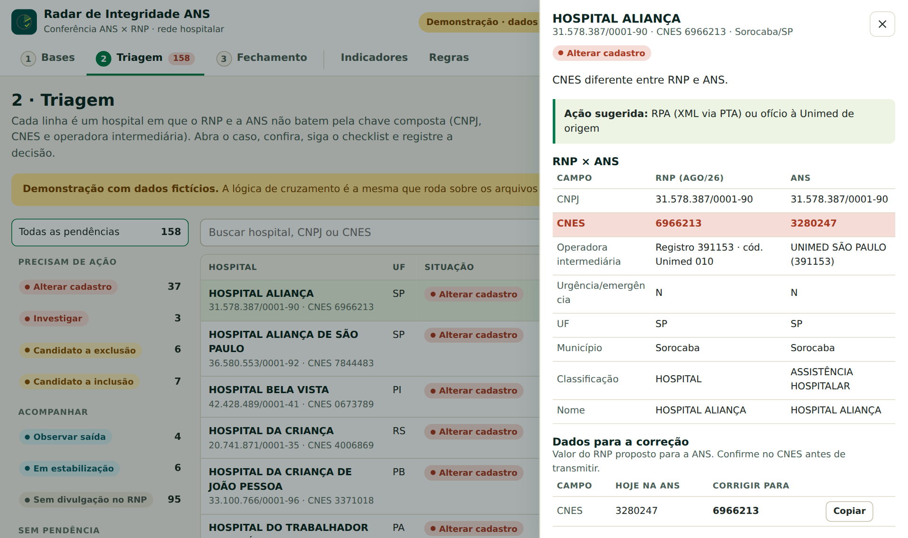

Adriano Natali de Souza
Analista de NegóciosTI
Integrante do grupo do Radar de Integridade Assistencial.
Complemento da apresentação à banca
Consulta rápida
PerguntasRespostas rápidas, valor, roadmap e o pedido GlossárioO significado de cada siglaProjeto Transforma · Telas com dados fictícios
Projeto Transforma · Six Lean Sigma · Inovação
O Radar de Integridade Assistencial cruza todo mês a rede hospitalar registrada na ANS com a rede divulgada no RNP, aponta cada divergência pela chave composta e guia a analista do caso até a correção, com o registro do que foi feito.
Em um minuto
Menos de 30 segundos cada, para ver antes ou depois da apresentação.
O problema
A regra é simples: o hospital que a operadora oferece precisa estar registrado na ANS exatamente como é divulgado na rede nacional. Na prática, as duas bases mudam todo mês, em ritmos diferentes, e quem garante que batem é uma planilha.
O que a operadora declarou à agência: cada hospital da rede de cada produto, com CNPJ, CNES e operadora intermediária. Muda por XML (RPI, RPA) ou pela plataforma da ANS.
O que as Unimeds publicam na Rede Nacional de Prestadores, carga a carga. É a rede que o beneficiário encontra e a fonte de verdade para o que deve estar na ANS.
Por que importa
Movimentos na rede hospitalar registrada na ANS em 20 meses.
Toda mudança na rede gera uma taxa da ANS por produto afetado. O Radar mostra quantos produtos uma mudança atinge antes da decisão.
Quando os dados de um hospital ficam diferentes nas duas bases, o beneficiário pode consultar uma informação desatualizada e a operação precisa de um contorno. O Radar existe para que isso seja visto antes.
Como funciona
O Radar segue o trabalho que a analista já faz, sem a planilha no meio. Cada etapa substitui um passo manual.
Solta o RPS Total de cada mês e o CSV do RPSWEB. As colunas e a competência são reconhecidas sozinhas.
Substitui: empilhar o RPS Total e montar a tabela dinâmica.
Conta a presença de cada hospital mês a mês e compara o mês mais recente com a ANS ativa, campo a campo.
Substitui: PROCV e conferência visual.
Cada caso mostra RNP × ANS, a linha do tempo, o que conferir e os dados prontos para a correção, com consulta ao CNES.
Substitui: a aba “Análise do mês” pintada por cores.
Decisão, protocolo e observação viram dado. O ciclo fecha com exportação e alimenta os indicadores da coordenação.
Substitui: copiar a aba para guardar o mês.
Está nas duas bases, mas CNES, intermediária, urgência ou UF diferem, ou o mesmo CNES aparece com outro CNPJ.
RPA via PTA ou ofício
Mesmo CNPJ divulgado no mês com CNES ou intermediária diferentes.
Conferir no RNP e no CNES
Ativo na ANS e ausente do RNP há cargas seguidas.
Plataforma ANS (RN 585)
Divulgado há 3 meses seguidos e ausente na ANS.
RPI, se o produto tiver vidas no SIB
Saiu só na última carga, ou ainda não completou 3 divulgações.
Aguardar a próxima carga
Ativo na ANS e nunca divulgado na janela carregada.
Passivo de higienização
Chave composta igual nas duas bases.
Nada a fazer
Simulação do processo
Para tornar a proposta concreta, simulamos o processo no navegador, com uma base fictícia de 2.502 hospitais e 9 competências no mesmo formato dos arquivos da área. A simulação ainda não rodou com dados reais e as regras não foram validadas: essa é a próxima fase.

Valor
Preferimos mostrar de onde vem cada número e o quanto ele já está comprovado. O valor final sai da linha de base medida com o próprio Radar.
R$ 100 mil a 1 mi
Multa potencial por hospital quando a rede praticada difere da registrada, além dos ofícios da ANS para responder. Detectar antes reduz a exposição.
~R$ 1.400 / produto
O gate “vida no SIB” evita incluir em produto sem beneficiário. Falta medir quantas taxas o processo atual já evita, para contar só o ganho novo.
2 semanas → 1 dia
O cruzamento manual dá lugar a uma fila pronta. A medição de horas com a área ainda está pendente.
Transparência: a estimativa anterior de ROI de 114% e payback de 6 meses está em revisão, porque contava economia que a equipe já obtém manualmente e premissas sem fonte. A revisão está registrada nas issues #1 a #5 do projeto.
Roadmap
Base da proposta
2h32 de imersão no fluxo ANS × rede com a responsável técnica pela interface: regra dos 3 meses, canais de XML e exclusão só pela plataforma da ANS.
Dores da coordenação de cadastro: nenhum indicador e nenhum monitoramento contínuo.
Volumetria de 20 meses e a chave composta (“se qualquer uma mudar, é B.O.”).
Cruzamento, triagem, fechamento, indicadores e regras parametrizáveis simulados com dados fictícios, ainda sem validação com dados reais.
O que precisamos
Menos planilha, mais segurança: a rede que vendemos é a rede que funciona.
As planilhas de consolidação e as cargas do RPS Total e do RPSWEB para a validação.
Algumas horas para validar regras e limites e para medir a linha de base.
O desenho já foi definido com a área de arquitetura da operadora e usa a infraestrutura que a empresa já tem. Falta o aval para usá-la no piloto.
Um ciclo mensal em paralelo à planilha, com metas combinadas.
Quem somos
Projeto Transforma · Certificação Six Lean Sigma. Um time de áreas diferentes, unido pelo mesmo problema. Os cinco participaram juntos das reuniões, mentorias, exercícios e simulações do projeto.
Analista de NegóciosTI
Integrante do grupo do Radar de Integridade Assistencial.
Enfermeira AuditoraAuditoria Técnica de Contas
Integrante do grupo do Radar de Integridade Assistencial.
Enfermeira AuditoraAuditoria Técnica de Contas
Integrante do grupo do Radar de Integridade Assistencial.
Analista de Contas MédicasIntercâmbio
Integrante do grupo do Radar de Integridade Assistencial.
Analista de SistemasTI
Integrante do grupo do Radar de Integridade Assistencial.
Perguntas frequentes
Respostas curtas, com os detalhes a um clique. Os números citados estão nas outras seções do site, com a fonte de cada um.
As soluções de mercado que olhamos são fortes em TISS e IDSS, mas não tratam da integridade da rede assistencial, que é o problema que trouxemos. O Radar começa exatamente onde o mercado não atua.
A primeira fase custa algumas dezenas de horas de trabalho interno, sem licença nem servidor. O retorno será medido com dados reais, em vez de prometido.
É um risco, não uma cobrança automática. A multa está prevista na regra da ANS e só é aplicada se a fiscalização confirmar que a rede praticada difere da registrada. Quem responde é a operadora que contrata o hospital.
O processo mapeado, as regras documentadas e uma simulação do ciclo completo com dados fictícios. Ela ainda não rodou com dados reais e as regras não foram validadas.
Das entrevistas com a área e das planilhas e históricos que ela usa hoje.
O número exato ainda será medido. Hoje a conferência é 100% manual, linha a linha; com o Radar, a analista passa a trabalhar só a fila de casos que pedem ação.
Ele não decide nada sozinho. Aponta o que está diferente, explica o motivo e sugere a ação. A analista confirma cada caso, com um checklist, antes de qualquer envio à ANS.
Na simulação, os arquivos são lidos no próprio computador e não são enviados a nenhum servidor. Os dados são de prestadores (CNPJ, CNES, nome do hospital), não de beneficiários.
Já desenhamos com a área de arquitetura da operadora: uma aplicação interna, com o login corporativo, sobre infraestrutura que a empresa já tem. O TOTVS só entra na fase final, para conferir a rede direto no sistema, apenas em leitura.
Porque é onde está o maior risco: são 2.502 hospitais, a multa é por hospital e a ANS tem regra específica para mudar a rede hospitalar. Um escopo menor permite provar o valor rápido.
Com o acesso às bases e algumas horas da analista, a fase 1 roda um mês real e compara com a conferência manual. É a primeira prova com dados reais, pequena e reversível.
Glossário
Para quem não é da área de saúde suplementar.
Nenhum termo encontrado. Tente uma sigla, como ANS ou CNES.